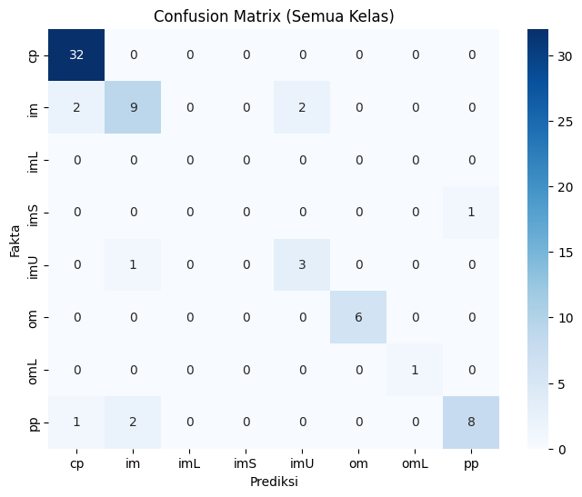
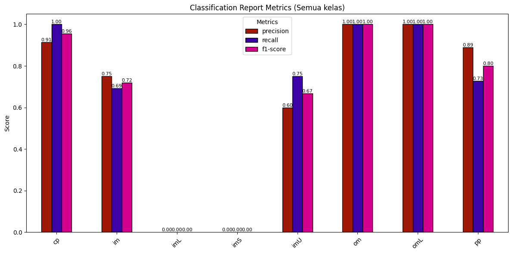
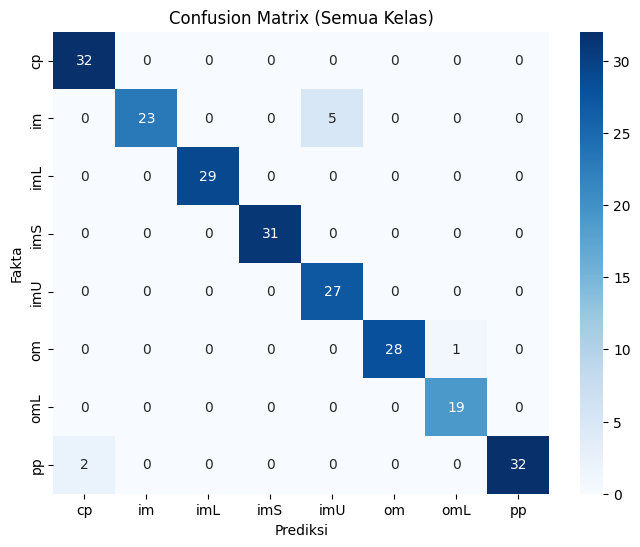
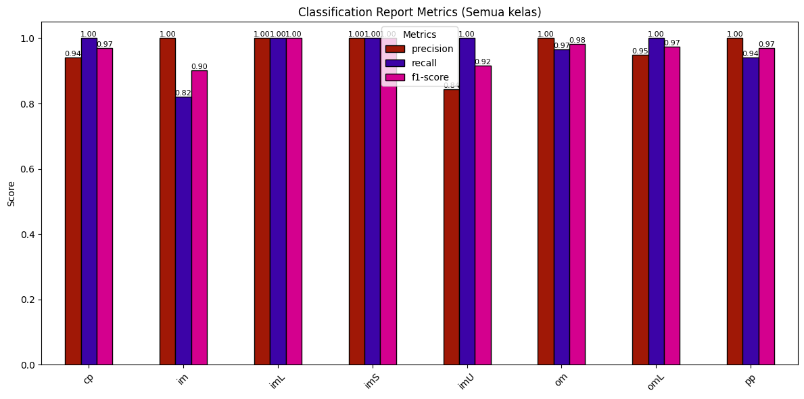
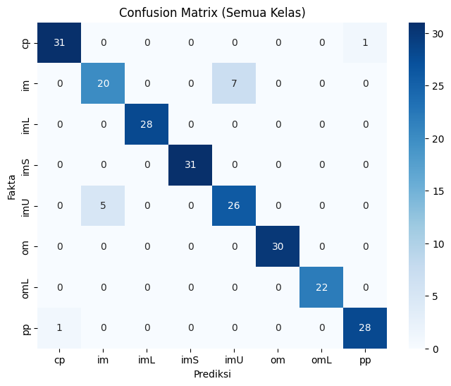
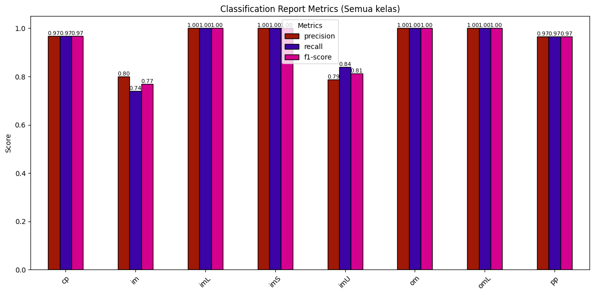
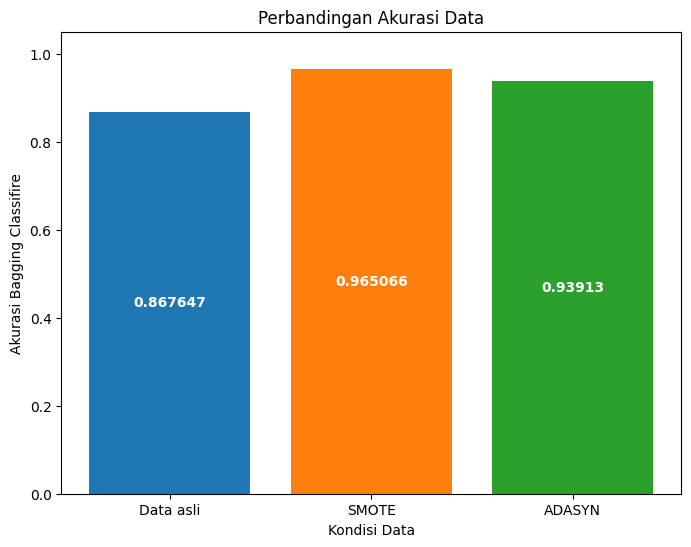
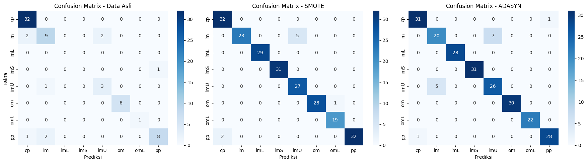

Bagging Classifier Decision Tree(Ecoli)#
Ini adalah tahap modeling klasifikasi data Ecoli menggunakan metode Bagging Classifier dengan Decision Tree, pada kondisi:
Data Ecoli yang belum dilakukan oversampling.
Data Ecoli yang sudah dilakukan oversampling menggunakan SMOTE.
Data Ecoli yang sudah dilakukan oversampling menggunakan ADASYN.
Metode Bagging Classifier dipilih karena mampu meningkatkan stabilitas dan akurasi model dengan cara menggabungkan beberapa model dasar melalui teknik bootstrap aggregating. Pada penelitian ini, digunakan dua model dasar yang berbeda. Naive Bayes dipilih karena kesederhanaannya dan kecepatannya dalam memproses data, sedangkan Decision Tree dipilih karena kemampuannya membentuk aturan yang lebih kompleks.
Kedua algoritma tersebut kemudian dibungkus (wrapped) ke dalam Bagging Classifier dan dievaluasi pada tiga kondisi data (asli, SMOTE, dan ADASYN). Tujuannya adalah untuk mengetahui apakah terjadi peningkatan akurasi setelah dilakukan oversampling, sekaligus membandingkan kinerja Bagging Classifier dengan dua model dasar yang berbeda.
Library yang diperlukan#
import pandas as pd
from sklearn.model_selection import train_test_split
from sklearn.metrics import accuracy_score, classification_report, confusion_matrix
from sklearn.ensemble import BaggingClassifier
from sklearn.tree import DecisionTreeClassifier
from sqlalchemy import create_engine
from sklearn.datasets import make_classification
import matplotlib.pyplot as plt
import seaborn as sns
import numpy as np
BaggingClassifier Menggunakan Metode Naive Bayes#
Ini adalah tahap modeling klasifikasi data Ecoli menggunakan metode Bagging Classifier dengan model dasar Decision Tree. Data diuji pada tiga kondisi, yaitu data asli (belum dilakukan oversampling), data hasil oversampling dengan SMOTE, dan data hasil oversampling dengan ADASYN.
Bagging Classifier pada data yang belum di lakukan oversampling#
engine = create_engine("mysql+pymysql://root:@localhost/psd")
query = "SELECT mcg, gvh, lip, chg, aac, alm1, alm2, localization_class FROM ecoli"
df = pd.read_sql(query, engine)
X = df.drop(columns=["localization_class"])
y = df["localization_class"]
X_train, X_test, y_train, y_test = train_test_split(
X, y, test_size=0.2, random_state=42
)
model = DecisionTreeClassifier()
bagging = BaggingClassifier(estimator=model, n_estimators=100, random_state=42)
bagging.fit(X_train, y_train)
prediksi = bagging.predict(X_test)
akurasi = accuracy_score(y_test, prediksi)
print("Akurasi:", akurasi)
print("Classification Report:\n", classification_report(y_test, prediksi, zero_division=0))
# confuison matrix
labels = np.unique(np.concatenate([y_train, y_test]))
cm = confusion_matrix(y_test, prediksi, labels=labels)
plt.figure(figsize=(8,6))
sns.heatmap(cm, annot=True, fmt="d", cmap="Blues",
xticklabels=labels, yticklabels=labels)
plt.xlabel("Prediksi")
plt.ylabel("Fakta")
plt.title("Confusion Matrix (Semua Kelas)")
plt.show()
all_labels = np.unique(np.concatenate([y_train, y_test]))
report = classification_report(
y_test, prediksi, labels=all_labels,
output_dict=True, zero_division=0
)
df_report = pd.DataFrame(report).transpose()
metrics_df = df_report[['precision','recall','f1-score']].iloc[:-3]
# warna diagram batang
ax = metrics_df.plot(
kind='bar',
figsize=(12,6),
color=["#a01806", "#3c03a7", "#d4008e"],
edgecolor='black'
)
plt.title("Classification Report Metrics (Semua kelas)")
plt.ylabel("Score")
plt.ylim(0,1.05)
plt.xticks(rotation=45)
# diagram batang
for p in ax.patches:
value = f"{p.get_height():.2f}"
x = p.get_x() + p.get_width()/2
y = p.get_height()
ax.annotate(value, (x, y), ha='center', va='bottom', fontsize=8, rotation=0)
plt.legend(title="Metrics")
plt.tight_layout()
plt.show()
Akurasi: 0.8676470588235294
Classification Report:
precision recall f1-score support
cp 0.91 1.00 0.96 32
im 0.75 0.69 0.72 13
imS 0.00 0.00 0.00 1
imU 0.60 0.75 0.67 4
om 1.00 1.00 1.00 6
omL 1.00 1.00 1.00 1
pp 0.89 0.73 0.80 11
accuracy 0.87 68
macro avg 0.74 0.74 0.73 68
weighted avg 0.86 0.87 0.86 68


BaggingClassifier pada data yang sudah di lakukan oversampling dengan SMOTE#
data_smote = pd.read_csv("../oversampling/hasil_oversampling_SMOTE.csv")
x_smote = data_smote.drop(columns=["class"])
y_smote = data_smote["class"]
data_smote
X_train_smote, X_test_smote, y_train_smote, y_test_smote = train_test_split(
x_smote, y_smote, test_size=0.2, random_state=42
)
model = DecisionTreeClassifier()
bagging = BaggingClassifier(estimator=model, n_estimators=100, random_state=42)
bagging.fit(X_train_smote, y_train_smote)
prediksi_smote = bagging.predict(X_test_smote)
akurasi_smote = accuracy_score(y_test_smote, prediksi_smote)
print("Akurasi : ", akurasi_smote)
print("Classification Report:\n", classification_report(y_test_smote, prediksi_smote, zero_division=0))
# confuison matrix
labels = np.unique(np.concatenate([y_train_smote, y_test_smote]))
cm = confusion_matrix(y_test_smote, prediksi_smote, labels=labels)
plt.figure(figsize=(8,6))
sns.heatmap(cm, annot=True, fmt="d", cmap="Blues",
xticklabels=labels, yticklabels=labels)
plt.xlabel("Prediksi")
plt.ylabel("Fakta")
plt.title("Confusion Matrix (Semua Kelas)")
plt.show()
all_labels = np.unique(np.concatenate([y_train_smote, y_test_smote]))
report = classification_report(
y_test_smote, prediksi_smote, labels=all_labels,
output_dict=True, zero_division=0
)
df_report = pd.DataFrame(report).transpose()
metrics_df = df_report[['precision','recall','f1-score']].iloc[:-3]
# warna diagram batang
ax = metrics_df.plot(
kind='bar',
figsize=(12,6),
color=["#a01806", "#3c03a7", "#d4008e"],
edgecolor='black'
)
plt.title("Classification Report Metrics (Semua kelas)")
plt.ylabel("Score")
plt.ylim(0,1.05)
plt.xticks(rotation=45)
# diagram batang
for p in ax.patches:
value = f"{p.get_height():.2f}"
x = p.get_x() + p.get_width()/2
y = p.get_height()
ax.annotate(value, (x, y), ha='center', va='bottom', fontsize=8, rotation=0)
plt.legend(title="Metrics")
plt.tight_layout()
plt.show()
Akurasi : 0.9650655021834061
Classification Report:
precision recall f1-score support
cp 0.94 1.00 0.97 32
im 1.00 0.82 0.90 28
imL 1.00 1.00 1.00 29
imS 1.00 1.00 1.00 31
imU 0.84 1.00 0.92 27
om 1.00 0.97 0.98 29
omL 0.95 1.00 0.97 19
pp 1.00 0.94 0.97 34
accuracy 0.97 229
macro avg 0.97 0.97 0.96 229
weighted avg 0.97 0.97 0.96 229


BaggingClassifier pada data yang sudah di lakukan oversampling dengan ADASYN#
data_adasyn = pd.read_csv("../oversampling/hasil_oversampling_ADASYN.csv")
x_adasyn = data_adasyn.drop(columns=["class"])
y_adasyn = data_adasyn["class"]
X_train_adasyn, X_test_adasyn, y_train_adasyn, y_test_adasyn = train_test_split(
x_adasyn, y_adasyn, test_size=0.2, random_state=42
)
model = DecisionTreeClassifier()
bagging = BaggingClassifier(estimator=model, n_estimators=100, random_state=42)
bagging.fit(X_train_adasyn, y_train_adasyn)
prediksi_adasyn = bagging.predict(X_test_adasyn)
akurasi_adasyn = accuracy_score(y_test_adasyn, prediksi_adasyn)
print(f"accuracy_score : {akurasi_adasyn}")
print("Classification Report:\n", classification_report(y_test_adasyn, prediksi_adasyn))
# confuison matrix
labels = np.unique(np.concatenate([y_train_adasyn, y_test_adasyn]))
cm = confusion_matrix(y_test_adasyn, prediksi_adasyn, labels=labels)
plt.figure(figsize=(8,6))
sns.heatmap(cm, annot=True, fmt="d", cmap="Blues",
xticklabels=labels, yticklabels=labels)
plt.xlabel("Prediksi")
plt.ylabel("Fakta")
plt.title("Confusion Matrix (Semua Kelas)")
plt.show()
all_labels = np.unique(np.concatenate([y_train_adasyn, y_test_adasyn]))
report = classification_report(
y_test_adasyn, prediksi_adasyn, labels=all_labels,
output_dict=True, zero_division=0
)
df_report = pd.DataFrame(report).transpose()
metrics_df = df_report[['precision','recall','f1-score']].iloc[:-3]
# warna diagram batang
ax = metrics_df.plot(
kind='bar',
figsize=(12,6),
color=["#a01806", "#3c03a7", "#d4008e"], # biru, oranye, hijau
edgecolor='black'
)
plt.title("Classification Report Metrics (Semua kelas)")
plt.ylabel("Score")
plt.ylim(0,1.05)
plt.xticks(rotation=45)
# diagram batang
for p in ax.patches:
value = f"{p.get_height():.2f}"
x = p.get_x() + p.get_width()/2
y = p.get_height()
ax.annotate(value, (x, y), ha='center', va='bottom', fontsize=8, rotation=0)
plt.legend(title="Metrics")
plt.tight_layout()
plt.show()
accuracy_score : 0.9391304347826087
Classification Report:
precision recall f1-score support
cp 0.97 0.97 0.97 32
im 0.80 0.74 0.77 27
imL 1.00 1.00 1.00 28
imS 1.00 1.00 1.00 31
imU 0.79 0.84 0.81 31
om 1.00 1.00 1.00 30
omL 1.00 1.00 1.00 22
pp 0.97 0.97 0.97 29
accuracy 0.94 230
macro avg 0.94 0.94 0.94 230
weighted avg 0.94 0.94 0.94 230


Perbandingan Akurasi Bagging Classifire dengan model Decision Tree#
label = ['Data asli', 'SMOTE', 'ADASYN']
temp = [akurasi, akurasi_smote, akurasi_adasyn]
fig, ax = plt.subplots(figsize=(8,6))
bc = ax.bar(label, temp, color=['#1f77b4','#ff7f0e','#2ca02c'])
ax.bar_label(bc, label_type='center', color='w', fontweight='bold')
ax.set(
xlabel='Kondisi Data',
ylabel='Akurasi Bagging Classifire',
title='Perbandingan Akurasi Data'
)
ax.set_ylim(0, 1.05)
plt.show()
fig, axes = plt.subplots(1, 3, figsize=(18, 5))
# Data asli
labels = np.unique(np.concatenate([y_train, y_test]))
cm = confusion_matrix(y_test, prediksi, labels=labels)
sns.heatmap(cm, annot=True, fmt="d", cmap="Blues",
xticklabels=labels, yticklabels=labels, ax=axes[0])
axes[0].set_title("Confusion Matrix - Data Asli")
axes[0].set_xlabel("Prediksi")
axes[0].set_ylabel("Fakta")
# Data SMOTE
labels = np.unique(np.concatenate([y_train_smote, y_test_smote]))
cm = confusion_matrix(y_test_smote, prediksi_smote, labels=labels)
sns.heatmap(cm, annot=True, fmt="d", cmap="Blues",
xticklabels=labels, yticklabels=labels, ax=axes[1])
axes[1].set_title("Confusion Matrix - SMOTE")
axes[1].set_xlabel("Prediksi")
axes[1].set_ylabel("")
# Data ADASYN
labels = np.unique(np.concatenate([y_train_adasyn, y_test_adasyn]))
cm = confusion_matrix(y_test_adasyn, prediksi_adasyn, labels=labels)
sns.heatmap(cm, annot=True, fmt="d", cmap="Blues",
xticklabels=labels, yticklabels=labels, ax=axes[2])
axes[2].set_title("Confusion Matrix - ADASYN")
axes[2].set_xlabel("Prediksi")
axes[2].set_ylabel("")
plt.tight_layout()
plt.show()


Berdasarkan grafik perbandingan akurasi Bagging Classifier dengan model Decision Tree, dapat disimpulkan bahwa akurasi data asli masih lebih rendah yaitu sekitar 86,7%, sedangkan setelah dilakukan oversampling dengan SMOTE akurasi meningkat signifikan hingga 96,5%, dan dengan ADASYN akurasi juga meningkat menjadi 93,5%. Hal ini menunjukkan bahwa teknik oversampling, khususnya SMOTE, mampu memperbaiki performa model dibandingkan data asli yang tidak seimbang.